import os
import numpy as np
import pandas as pd
import seaborn as sns
import matplotlib.pyplot as plt
from matplotlib import colormaps
import scipy.stats as stats
import scipy.integrate as integrate
from scipy.interpolate import CubicSplineDistribution of True Stellar Rotational Velocities
Where the variable \(x \equiv v\) is the true rotational velocity, and \(y \equiv v \sin i\) is the projected rotational velocity. The variable \(x\) follows a distribution \(f_X(x)\), and the variable \(y\) follows a distribution \(f_Y(y)\). The parameter \(\alpha\) is a constant that depends on the specific characteristics of the system being modeled.
The function designed in this proyect is
\[f_Y(y) = \int_y^\infty \frac{y^{2\alpha+1}}{x^{2\alpha+1}} \frac{1}{\sqrt{x^2 + y^2}} f_X(x) \, dx\]
We will begin with set of field stars, called Geneva with, known projected rotational velocities, and we will assume a distribution for the true rotational velocities. This data set was obtained from J. Holmberg et al. 2009 and contains 11818 projected rotational velocities of F and G dwarf stars in the solar neighborhood.
# Load the datasets
gendata = pd.read_csv('data/geneve.dat', header=None)
gendata.columns = ['vsini']
print("Number of stars:",gendata.shape[0])Number of stars: 11818By expert knowledge, we know that any star has a rotational velocity \(v \leq 0\) km/s. Therefore, we have to remove the values where this condition is met.
print("Gendata vsini <= 0 count:",gendata[gendata.vsini <=0].vsini.count())
gendata = gendata[gendata.vsini > 0]Gendata vsini <= 0 count: 133First we will create the Kernel Density Estimation (KDE) function for the given \(v \sin{i}\) data points, that represents the projected rotational velocities of stars. The KDE function will help us estimate the probability density function of the data \(f_Y(y)\).
kde = stats.gaussian_kde(gendata.vsini, bw_method='silverman')
vsinimax, vsinimin = gendata.vsini.max(), gendata.vsini.min()
vsinirange = np.linspace(vsinimin-2, vsinimax+1, 1000)
fig, ax = plt.subplots()
ax.plot(vsinirange, kde(vsinirange), label='Gendata KDE', color='blue')
sns.histplot(gendata.vsini, bins=30, stat='density', alpha=0.5, label='Gendata Histogram', ax=ax)
ax.axvline(0.0, color='black', linestyle='--')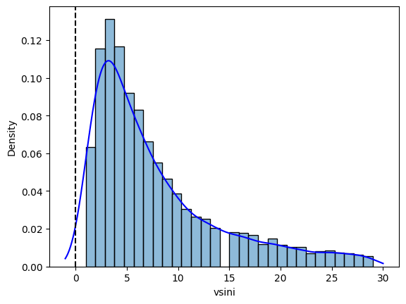
As we can see in the KDE plot below, the projected rotational velocities are distributed between \(0\) km/s and approximately \(30\) km/s, with a peak around \(3\) km/s. But the KDE does not begins exactly at \(0\) km/s, so we will use a technique called “reflection” to ensure that the KDE starts at \(0\) km/s. This technique involves reflecting the data points around the boundary (0 km/s in this case) to create a symmetric distribution.
kdeplus = stats.gaussian_kde(dataset=gendata.vsini,bw_method='silverman')
kdenegs = stats.gaussian_kde(dataset=-gendata.vsini,bw_method='silverman')
vsinimax, vsinimin = max(gendata.vsini)+2, min(gendata.vsini-2)
vsinirange = np.linspace(start=vsinimin, stop=vsinimax, num=1000)
kdeplus_values = kdeplus.evaluate(vsinirange)
kdenegs_values = kdenegs.evaluate(vsinirange)
# This function computes the difference between the two gaussian KDEs.
# This KDE represents the estimated vsini distribution corrected for
# the observational bias towards positive values. Taking the negative
# KDE into account helps to mitigate the skewness introduced by the
# fact that vsini values cannot be negative.
kde = lambda x: kdeplus.evaluate(x) - kdenegs.evaluate(x)
fig, axes = plt.subplots(nrows=2, ncols=2, figsize=(18, 10))
for i, ax in enumerate(axes.flatten()):
sns.histplot(
data=gendata,
x='vsini',
bins=15,
stat='density',
edgecolor='black',
alpha=0.7,
ax=ax
)
ax.set_ylabel('Density')
ax.set_xlabel(r'$v\sin(i)$ [km/s]')
ax.set_ylim(0, None)
if i == 0:
ax.plot(vsinirange,kdeplus_values,color='blue',lw=2,label='KDE Positive (Silverman)')
elif i == 1:
ax.plot(vsinirange,kdenegs_values,color='red',lw=2,label='KDE Negative (Silverman)')
elif i == 2:
ax.plot(vsinirange,kdeplus_values,color='blue',lw=2,label='KDE Positive (Silverman)')
ax.plot(vsinirange,kdenegs_values,color='red',lw=2,label='KDE Negative (Silverman)')
else:
ax.plot(vsinirange,kde(vsinirange),color='green',lw=2,label='KDE Difference')
ax.legend(frameon=False)
plt.show()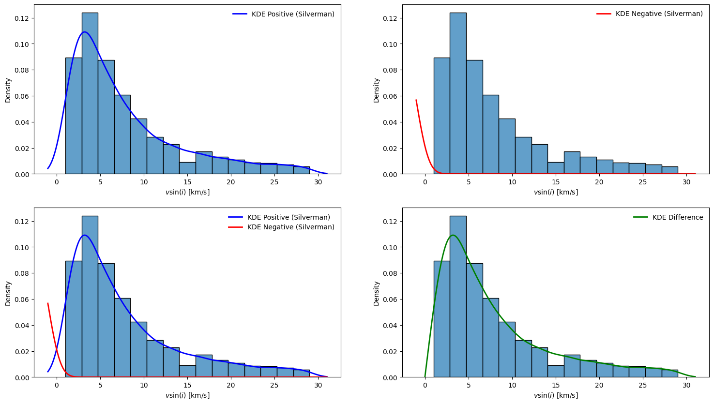
Now we will create a meshgrid for the variables \(x\) and \(y\). The meshgrid will allow us to evaluate the integral for a range of values of \(x\) and \(y\).
N = 150
a, b = 0.1, gendata.vsini.max()+5
dx = (b - a)/N
dy = (b - a + dx/2)/N
x = a + dx * (np.arange(N)-0.05)
y = a + dy * (np.arange(N)-0.05)
xx, yy = np.meshgrid(x, y)
fig, ax = plt.subplots(figsize=(5, 5))
ax.scatter(xx, yy, s=1, marker='.', alpha=0.7)
ax.axis('equal')
ax.set_xlabel(r'$v$-axis [km/s]')
ax.set_ylabel(r'$v\sin{i}$-axis [km/s]')
ax.set_xticks([])
ax.set_yticks([])
ax.set_yticklabels([])
ax.set_xticklabels([])
axins = ax.inset_axes([0.55, 0.55, 0.4, 0.4], xlim=(0, dx+0.5), ylim=(0, dy+0.5))
axins.scatter(xx, yy, s=1, marker='.')
axins.set_xlabel(r'$v$-axis [km/s]',color='red')
axins.set_ylabel(r'$v\sin{i}$-axis [km/s]', color='red')
axins.set_yticklabels([])
axins.set_xticklabels([])
axins.set_xticks([])
axins.set_yticks([])
plt.show()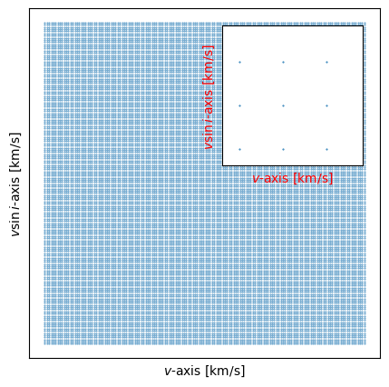
Recall the objective equation: \[f_Y(y) = c_\alpha\int_y^\infty \frac{y^{2\alpha+1}}{x^{2\alpha+1}} \frac{1}{\sqrt{x^2 - y^2}} f_X(x) \, dx\]
We caan use a matrix form to represent the integral equation. We will discretize the integral by evaluating it at the meshgrid points.
\[\underbrace{f_Y(y)}_{\mathbf{Y}} = \underbrace{c_\alpha\int_y^\infty dx \frac{y^{2\alpha+1}}{x^{2\alpha+1}} \frac{1}{\sqrt{x^2 - y^2}}}_{\mathbf{A}} \, \underbrace{f_X(x)}_{\mathbf{X}} \]
Now we will using the matrix form for our objetive equation: \[Y = AX\]
where \(Y = f_Y(y)\), \(X = f_X(x)\), and \(A\) is the matrix that contains the values of the integrand evaluated at the meshgrid points.
Now we will solve for \(X\) using the pseudo-inverse of matrix \(A\): \[X = A^{-1}Y\]
First we will create the A matrix by evaluating the integrand at the meshgrid points. Then we will compute the pseudo-inverse of matrix \(A\) using the Singular Value Decomposition (SVD) method. So we also create a vector of \(\alpha\) values to evaluate the integrand for different \(\alpha\) values.
Finally, we will multiply the pseudo-inverse of matrix \(A\) with the KDE values \(Y\) to obtain the estimated distribution of true stellar rotational velocities \(X = f_X(x)\).
# Create an array of alpha values
alphas = np.linspace(-0.5, 2.0, 20)
alphas = alphas[:, None, None]
# This mask is created to obtain just real values where y=vsin(i)<=v=x
mask = yy < xx
ratio_grid = np.zeros_like(xx)
geom_grid = np.zeros_like(xx)
ratio_grid[mask] = (yy[mask]/xx[mask])
geom_grid[mask] = 1/np.sqrt(xx[mask]**2-yy[mask]**2)
A = (ratio_grid[None, :, :]**(2*alphas+1)) * geom_grid[None, :, :]
print("A shape:", A.shape)A shape: (20, 150, 150)Now we will obtain the Probability Density Function (PDF) of the projected rotational velocities \(f_Y(y)\) using the KDE function created earlier. Then, we will use the pseudo-inverse of matrix \(A\) to compute the estimated distribution of true stellar rotational velocities \(f_X(x)\).
fyy = kde(y)
fig, ax = plt.subplots()
ax.scatter(y.flatten(), fyy, s=2)
ax.set_xlabel(r'$v\sin{i}$-axis [km/s]')
ax.set_ylabel('Density')
plt.show()
Now we want to regularize the solution to avoid overfitting. We will use Tikhonov regularization, which adds a penalty term to the least squares solution. The regularized solution is given by: \[\hat X = (A^\top A+\lambda I)^{-1}A^\top Y\]
where \(\lambda\) is the regularization parameter, and \(I\) is the identity matrix. In this case, we will set \(\lambda = 0.01\).
# Solve the regularized least squares problem following Tikhonov regularization
# for each alpha value. Finding fxx such that:
# minimize || A * fxx - fyy ||^2 + lambda * || fxx ||^2
AT = A.transpose(0, 2, 1)
# Tikhonov regularization parameter
tiklambda = 1
# Identity matrix
Idnt = np.eye(N)
LHS = AT @ A + tiklambda * Idnt[None, ...]
RHS = AT @ fyy
# Solve for fxx, the estimated distribution of v.
fxx = np.linalg.solve(LHS, RHS[..., None]).squeeze()Now we want to normalize the estimated distribution of true stellar rotational velocities \(f_X(x)\) so that it integrates to 1 over the range of \(x\). This is done by dividing the estimated distribution by its integral over the range of \(x\).
# Interpolate fxx for smoother curves
fxx_inter = CubicSpline(x=x, y=fxx, axis=1)(x)
# Normalize each fxx_inter row to ensure it integrates to 1
cte = integrate.simpson(fxx_inter, x, axis=1)
fxx_inter = fxx_inter / cte[:, None]
print("Shape after interpolation and normalization:", fxx_inter.shape)
print("Integration check (should be close to 1):", np.round(integrate.simpson(fxx_inter, x, axis=1).sum()/len(alphas),2))Shape after interpolation and normalization: (20, 150)
Integration check (should be close to 1): 1.0Now we want to reconstruct the projected rotational velocities distribution \(f_Y(y)\) using the estimated true rotational velocities distribution \(f_X(x)\). Integrating the estimated \(f_X(x)\) back into the original integral equation should yield a distribution that closely matches the original KDE of \(f_Y(y)\).
# Reconstruct fyy from fxx_inter and A, using numerical integration
fyy_recons = integrate.trapezoid(A * fxx_inter[:, None, :],x=x,axis=2)cmap = colormaps.get_cmap('viridis')
norm = plt.Normalize(vmin=alphas.min(), vmax=alphas.max())
# 2. Crear el objeto ScalarMappable que usará el colorbar
sm = plt.cm.ScalarMappable(cmap=cmap, norm=norm)
sm.set_array(alphas) # Le decimos que valores numéricos representan el color
fig, ax = plt.subplots()
for i in range(len(alphas)):
line_color = cmap(norm(alphas[i])).flatten()
ax.plot(x, fyy_recons[i,:], color=line_color, alpha=0.8)
cbar = plt.colorbar(sm, ax=ax)
cbar.set_label(r'$\alpha$-values', fontsize=12)
ax.plot(x, fyy, 'r-', lw=3, label='Original KDE')
ax.set_xlabel(r'$v\sin{i}$ [km/s]', fontsize=12)
ax.set_ylabel('Probability Density Function', fontsize=12)
ax.legend(frameon=False)
plt.savefig('results/vsini_reconstruction_alphavalues_geneve.png', dpi=300, bbox_inches='tight')
plt.show()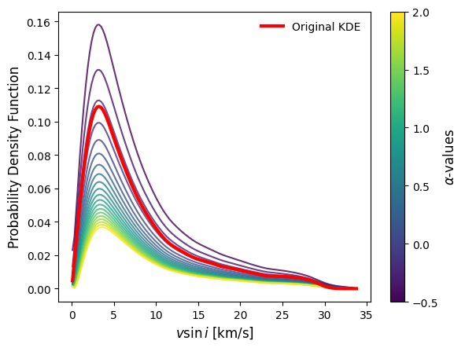
For see what is the best value of the parameter \(\alpha\), we will use the RMSE (Root Mean Square Error) metric to compare the reconstructed \(f_Y(y)\) with the original KDE of \(f_Y(y)\). The value of \(\alpha\) that minimizes the RMSE will be considered the best fit for the data.
rmse = np.sqrt(np.mean((fyy_recons - fyy[None, :])**2, axis=1))
alins = np.linspace(alphas.min(), alphas.max(), 100)
rmse_smooth = CubicSpline(alphas.flatten(), rmse)(alins)
minidx = np.argmin(rmse)
fig, ax = plt.subplots()
ax.scatter(alphas.flatten(), rmse)
ax.plot(alins, rmse_smooth, 'r-', lw=2)
ax.set_xlabel(r'$\alpha$-values', fontsize=12)
ax.set_ylabel('RMSE', fontsize=12)
ax.axvline(
alphas.flatten()[minidx],
color='black',
linestyle='--',
label=f'$\\alpha_\\text{{min}}={alphas.flatten()[minidx]:.2f}$'
)
ax.legend(frameon=False)
ax.grid(ls='--', alpha=0.7)
plt.savefig('results/rmse_vs_alpha_geneve.png', dpi=300, bbox_inches='tight')
plt.show()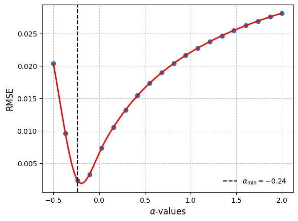
Finally, we will plot the estimated distribution of true stellar rotational velocities \(f_X(x)\) for the best fit value of \(\alpha\). This plot will show how the true rotational velocities are distributed based on the projected rotational velocities data and the chosen model.
fxx_opt = fxx_inter[minidx, :]
fig, ax = plt.subplots()
ax.plot(x, fxx_opt, label='True Velocity Distribution f(v)')
ax.set_xlabel(r'$v$ [km/s]', fontsize=12)
ax.set_ylabel('Probability Density Function', fontsize=12)
ax.legend(frameon=False)
ax.grid(ls='--', alpha=0.5)
#ax.set_ylim(0, None)
plt.savefig('results/true_velocity_distribution_geneve.png', dpi=300, bbox_inches='tight')
plt.show()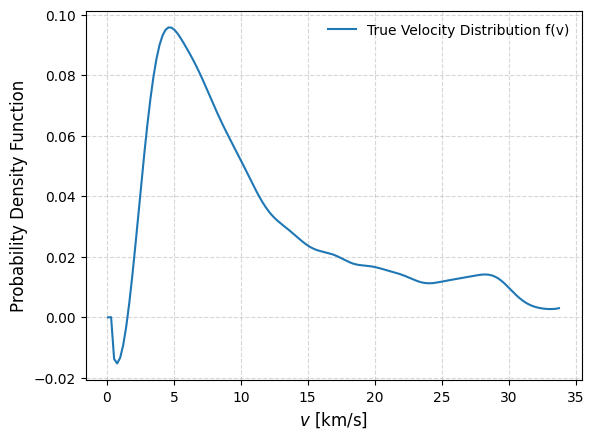
class TrueVelocityDistribution:
def __init__(self, vsini):
self.vsini = vsini
self.vsini = self.vsini[self.vsini > 0]
def _gaussian_kernel(self):
"""
Creates a Gaussian kernel density estimator (KDE) for the vsini data,
accounting for both positive and negative values to correct for bias.
Returns:
--------
kde (function): A function that evaluates the KDE at given points.
"""
kde_plus = stats.gaussian_kde(dataset=self.vsini, bw_method='silverman')
kde_negs = stats.gaussian_kde(dataset=-self.vsini, bw_method='silverman')
kde = lambda x: kde_plus.evaluate(x) - kde_negs.evaluate(x)
return kde
def _grid(self, N=150, a=None, b=None, c=None, d=None):
"""
Creates a 2D grid for velocity (v) and projected velocity (vsini).
Parameters:
-----------
- N:int
Number of points in each dimension.
- a:float or None
Minimum value for the v-axis. If None, defaults to 0.1.
- b:float or None
Maximum value for the v-axis. If None, defaults to max(vsini) + 5.
- c:float or None
Minimum value for the vsini-axis. If None, defaults to a + dx/2.
- d:float or None
Maximum value for the vsini-axis. If None, defaults to b.
Returns:
--------
- x: np.ndarray
1D array of v-axis values.
- y: np.ndarray
1D array of vsini-axis values.
- xx: np.ndarray
2D meshgrid array for v-axis.
- yy: np.ndarray
2D meshgrid array for vsini-axis.
"""
a,b = 0.1 if a is None else a, self.vsini.max()+5
dx = (b - a)/N
c, d = a + dx/2 if c is None else c, b if d is None else d
dy = (d - c)/N
x = a + dx * (np.arange(N)-0.05)
y = c + dy * (np.arange(N)-0.05)
xx, yy = np.meshgrid(x, y)
return x, y, xx, yy
def Amatrix(self, alphas, xx, yy):
"""
Constructs the A matrix used in the Tikhonov regularization.
Parameters:
-----------
- alphas: np.ndarray
Array of alpha values for regularization.
- xx: np.ndarray
2D meshgrid array for v-axis.
- yy: np.ndarray
2D meshgrid array for vsini-axis.
Returns:
- A: np.ndarray
3D array representing the A matrix for each alpha value.
"""
alphas = alphas[:, None, None]
# This mask is created to obtain just real values where y=vsin(i)<=v=x
mask = yy < xx
ratio_grid = np.zeros_like(xx)
geom_grid = np.zeros_like(xx)
ratio_grid[mask] = (yy[mask]/xx[mask])
geom_grid[mask] = 1/np.sqrt(xx[mask]**2-yy[mask]**2)
A = (ratio_grid[None, :, :]**(2*alphas+1)) * geom_grid[None, :, :]
return A
def fyy(self, kde, y):
"""
Evaluates the KDE at the given vsini values.
Parameters:
-----------
- kde: function
The KDE function to evaluate.
- y: np.ndarray
1D array of vsini-axis values.
Returns:
--------
- fyy: np.ndarray
Evaluated KDE values at vsini points.
"""
return kde(y)
def tikhonov_solution(self, A, fyy, tiklambda=0.1):
"""
Solves the Tikhonov regularization problem to estimate the true velocity distribution.
Parameters:
-----------
- A: np.ndarray
3D array representing the A matrix for each alpha value.
- fyy: np.ndarray
1D array of evaluated KDE values at vsini points.
- tiklambda: float
Tikhonov regularization parameter. Default is 0.1.
Returns:
--------
- fxx: np.ndarray
2D array of estimated true velocity distributions for each alpha value.
"""
AT = A.transpose(0, 2, 1)
# Identity matrix
Idnt = np.eye(A.shape[1])
LHS = AT @ A + tiklambda * Idnt[None, ...]
RHS = AT @ fyy
# Solve for fxx, the estimated distribution of v.
fxx = np.linalg.solve(LHS, RHS[..., None]).squeeze()
return fxx
def _normaization(self, fxx, x):
"""
Normalizes each row of fxx so that it integrates to 1.
Parameters:
-----------
- fxx: np.ndarray
2D array of estimated true velocity distributions for each alpha value.
- x: np.ndarray
1D array of v-axis values.
Returns:
--------
- fxx_norm: np.ndarray
Normalized fxx array.
"""
fxx_inter = CubicSpline(x=x, y=fxx, axis=1)(x)
# Normalize each fxx_inter row to ensure it integrates to 1
cte = integrate.simpson(fxx_inter, x, axis=1)
fxx_norm = fxx_inter / cte[:, None]
return fxx_norm
def reconstruct_fyy(self, A, fxx_norm, x):
"""
Reconstructs fyy from fxx_norm and A using numerical integration.
Parameters:
-----------
- A: np.ndarray
3D array representing the A matrix for each alpha value.
- fxx_norm: np.ndarray
Normalized fxx array.
- x: np.ndarray
1D array of v-axis values.
Returns:
--------
- fyy_recons: np.ndarray
2D array of reconstructed fyy values for each alpha value.
"""
fyy_recons = integrate.trapezoid(A * fxx_norm[:, None, :],x=x,axis=2)
return fyy_recons
def obtain_alpha_min(self, fyy_recons, fyy, alphas, name=None):
"""
Computes the RMSE between reconstructed fyy and original fyy to find the optimal alpha.
Parameters:
-----------
- fyy_recons: np.ndarray
2D array of reconstructed fyy values for each alpha value.
- fyy: np.ndarray
1D array of original fyy values.
- alphas: np.ndarray
Array of alpha values for regularization.
Returns:
--------
- alpha_min: float
The alpha value that minimizes the RMSE.
- minidx: int
The index of the optimal alpha value.
- rmse: np.ndarray
Array of RMSE values for each alpha.
"""
name = '' if name is None else name
rmse = np.sqrt(np.mean((fyy_recons - fyy[None, :])**2, axis=1))
minidx = np.argmin(rmse)
alpha_min = alphas.flatten()[minidx]
alins = np.linspace(alphas.min(), alphas.max(), 100)
rmse_smooth = CubicSpline(alphas.flatten(), rmse)(alins)
fig, ax = plt.subplots()
ax.scatter(alphas.flatten(), rmse)
ax.plot(alins, rmse_smooth, 'r-', lw=2)
ax.set_xlabel(r'$\alpha$-values', fontsize=12)
ax.set_ylabel('RMSE', fontsize=12)
ax.axvline(
alpha_min,
color='black',
linestyle='--',
label=f'$\\alpha_\\text{{min}}={alpha_min:.2f}$'
)
ax.legend(frameon=False)
ax.grid(ls='--', alpha=0.7)
plt.savefig(f'results/rmse_vs_alpha_{name}.png', dpi=300,bbox_inches='tight')
return alpha_min, minidx, rmse
def fxx_optimal(self, fxx_norm, minidx, name=None):
"""
Retrieves the optimal fxx distribution based on the minimum RMSE index.
Parameters:
-----------
- fxx_norm: np.ndarray
Normalized fxx array.
- minidx: int
The index of the optimal alpha value.
Returns:
--------
- fxx_opt: np.ndarray
The optimal true velocity distribution.
"""
name = '' if name is None else name
fig, ax = plt.subplots()
ax.plot(fxx_norm[minidx, :], label='True Velocity Distribution f(v)')
ax.set_xlabel(r'$v$ [km/s]')
ax.set_ylabel('Probability Density Function')
ax.legend(frameon=False)
ax.grid(ls='--', alpha=0.5)
plt.savefig(f'results/true_velocity_distribution_{name}.png', dpi=300, bbox_inches='tight')
return fxx_norm[minidx, :] # FORWARD USAGE EXAMPLE
if 'data' in os.listdir():
startcums = os.listdir('data')
startcums.remove('Yudin.dat')
startcums.remove('geneve.dat')
else:
startcums = os.listdir('test')
alphas = np.linspace(-0.5, 2.0, 20)
for dataset in startcums:
name = dataset.split('.')[0]
print(f' ==== Processing {name} star cluster dataset ==== ')
vsini_data = pd.read_csv(f'data/{dataset}', header=None)
vsini_data.columns = ['vsini']
print('Velocity Range: ', vsini_data.vsini.min(), ' - ', vsini_data.vsini.max())
print('Number of stars:' ,vsini_data.shape[0])
DisTSRotVel = TrueVelocityDistribution(vsini=vsini_data.vsini)
x, y, xx, yy = DisTSRotVel._grid(N=150)
kde = DisTSRotVel._gaussian_kernel()
A = DisTSRotVel.Amatrix(alphas=alphas, xx=xx, yy=yy)
fyy = DisTSRotVel.fyy(kde=kde, y=y)
fxx = DisTSRotVel.tikhonov_solution(A=A, fyy=fyy, tiklambda=0.1)
fxx_norm = DisTSRotVel._normaization(fxx=fxx, x=x)
fyy_recons = DisTSRotVel.reconstruct_fyy(A=A, fxx_norm=fxx_norm, x=x)
alpha_min, minidx, _ = DisTSRotVel.obtain_alpha_min(
fyy_recons=fyy_recons,
fyy=fyy,
alphas=alphas,
name=name
)
print(f'Optimal alpha for {name}:', np.round(alpha_min, 2))
print('------------------------------------------\n')
fxx_opt = DisTSRotVel.fxx_optimal(fxx_norm=fxx_norm, minidx=minidx, name=name) ==== Processing AlphaPersei star cluster dataset ====
Velocity Range: 3.6 - 66.1
Number of stars: 57
Optimal alpha for AlphaPersei: 0.16
------------------------------------------
==== Processing Pleiades star cluster dataset ====
Velocity Range: 0.0 - 66.4
Number of stars: 145
Optimal alpha for Pleiades: 0.16
------------------------------------------
==== Processing ComaBerenice star cluster dataset ====
Velocity Range: 0.0 - 35.1
Number of stars: 64
Optimal alpha for ComaBerenice: 0.29
------------------------------------------
==== Processing Praesepe star cluster dataset ====
Velocity Range: 0.0 - 69.0
Number of stars: 150
Optimal alpha for Praesepe: 0.29
------------------------------------------
==== Processing Hyades star cluster dataset ====
Velocity Range: 1.1 - 65.9
Number of stars: 156
Optimal alpha for Hyades: 0.16
------------------------------------------
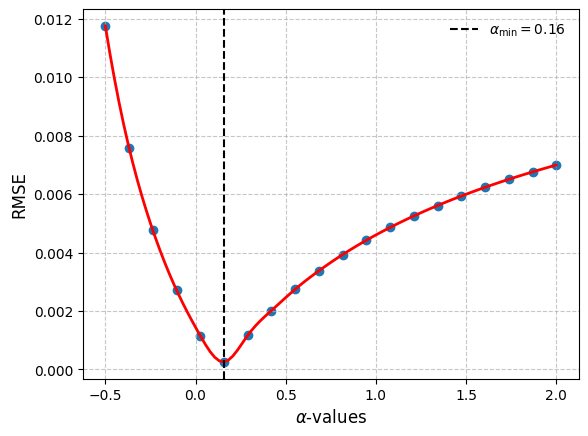
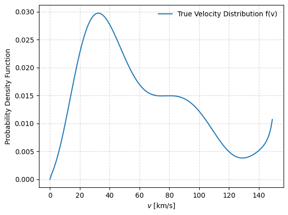
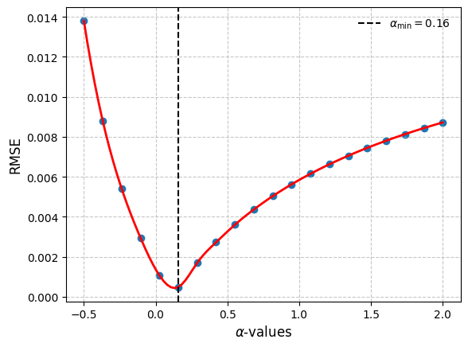
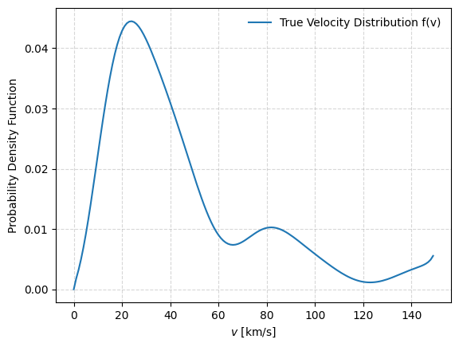
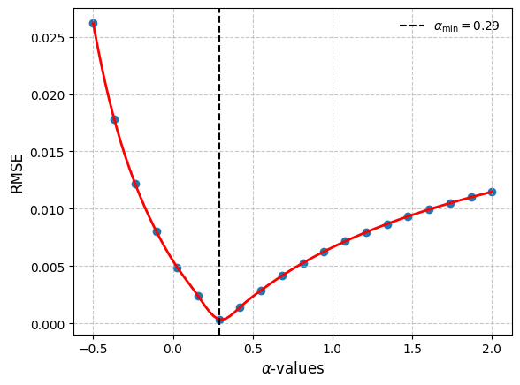
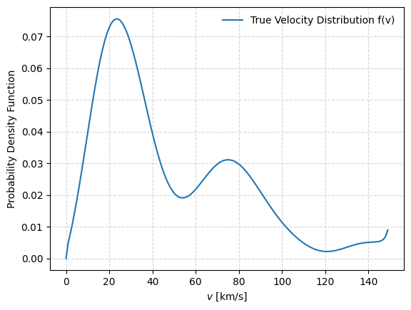
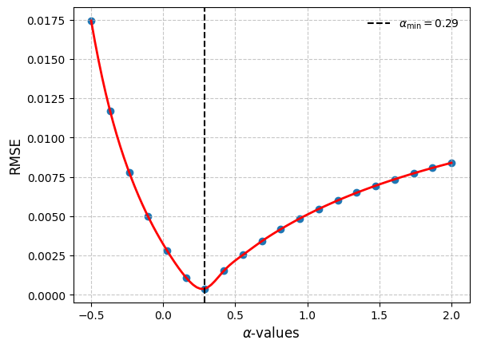
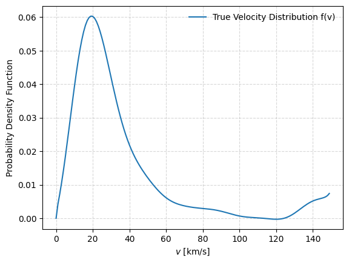
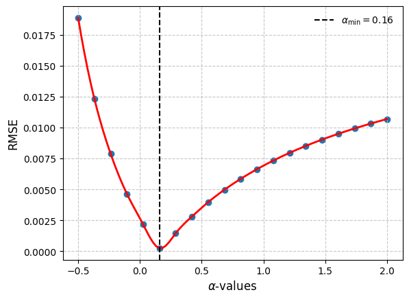
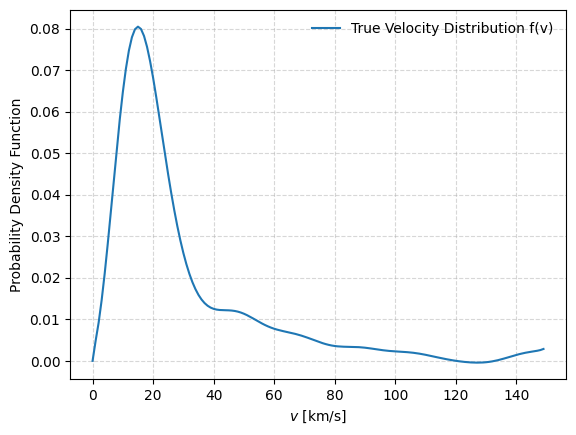
I way to obtain a stable solution is to use Tikhonov regularization, where \(\lambda\) is a regularization parameter that controls the trade-off between fitting the data and smoothing the solution. The term \(\lambda I\) is added to the matrix \(A^\top A\) to ensure that it is invertible and to stabilize the solution.
For this L-curve method is used to find the optimal value of \(\lambda\). The L-curve is a plot of the norm of the solution \(\|X\|\) versus the norm of the residual \(\|AX - Y\|\) for different values of \(\lambda\). The corner of the L-curve corresponds to the optimal value of \(\lambda\) that balances the trade-off between fitting the data and smoothing the solution.
tiklambdas = np.logspace(-1, 1, 10)
idx_alpha = 0
A_matrix = A[idx_alpha] # Matrix (150, 150)
y_vector = fyy # Vector (150,)
N = A_matrix.shape[1] # 150
norm_residual = [] # ||A * fxx - fyy||
norm_solution = [] # ||fxx||
AT = A_matrix.T
ATy = AT @ y_vector
ATA = AT @ A_matrix
Idnt = np.eye(N)
for lam in tiklambdas:
LHS = ATA + lam * Idnt
fxx_lam = np.linalg.solve(LHS, ATy)
# Res: How far is A*fxx from y
res = np.linalg.norm(A_matrix @ fxx_lam - y_vector)
# Sol: How big/complex is the solution fxx_lam
sol = np.linalg.norm(fxx_lam)
norm_residual.append(np.linalg.norm(res))
norm_solution.append(np.linalg.norm(sol))
norm_residual = np.array(norm_residual)
norm_solution = np.array(norm_solution)
plt.figure(figsize=(8, 6))
# Graficar la curva (log-log)
plt.loglog(norm_residual, norm_solution, 'b.-', markersize=10, label='L-Curve')
# Anotar algunos valores de lambda para referencia
# Tomamos índices espaciados para no saturar el gráfico
for i in range(0, len(tiklambdas), 5):
plt.annotate(f'{tiklambdas[i]:.1e}',
(norm_residual[i], norm_solution[i]),
textcoords="offset points",
xytext=(5, 5),
fontsize=8,
alpha=0.7)
plt.title(f"L-Curve para Tikhonov (Alpha index {idx_alpha})")
plt.xlabel(r"Norma del Residuo $||Ax - y||_2$ (Ajuste)")
plt.ylabel(r"Norma de la Solución $||x||_2$ (Suavidad)")
plt.grid(True, which="both", ls="--", alpha=0.5)
plt.legend()
plt.show()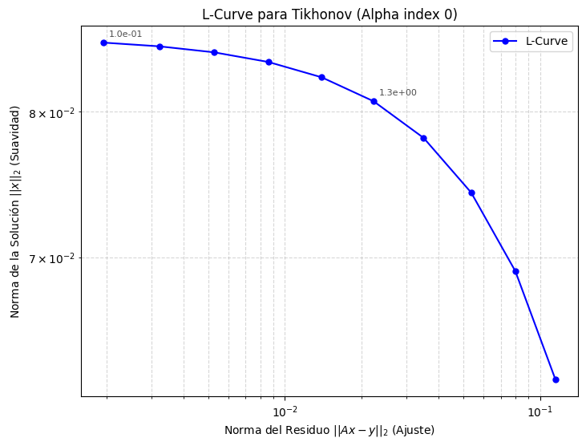